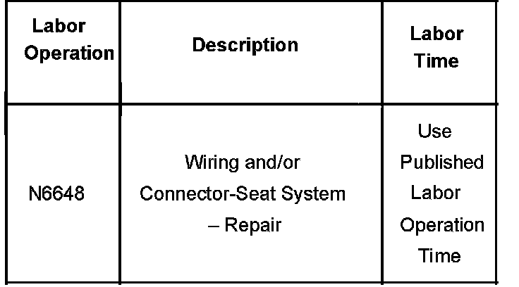

Interior - Front Power Seat Adjust/Memory Inoperative
Bulletin No.: 06-08-50-012Date: October 06, 2006
TECHNICAL
Subject:
Front Driver or Passenger Power Seat Adjust Functions Inoperative and/or Driver Seat Memory Inoperative (Check Power Seat Switch Connector)
Models:
2007 Cadillac Escalade, Escalade ESV, Escalade EXT
2007 Chevrolet Avalanche, Silverado (New Style), Suburban, Tahoe
2007 GMC Sierra (New Style), Yukon, Yukon Denali, Yukon XL, Yukon Denali XL
Condition
Some customers may comment that the front driver or passenger power seat adjust functions are inoperative. They may also comment that the driver seat memory is inoperative.
Cause
The cause of this condition may be due to the power seat switch connector not being fully seated.
Correction
Remove the front seat cushion outer trim panel following the replacement procedure in SI. Verify that the power seat switch connector is fully seated. Reseat the connector and test the seat functions.
Warranty Information

For vehicles repaired under warranty, use the table.

Disclaimer